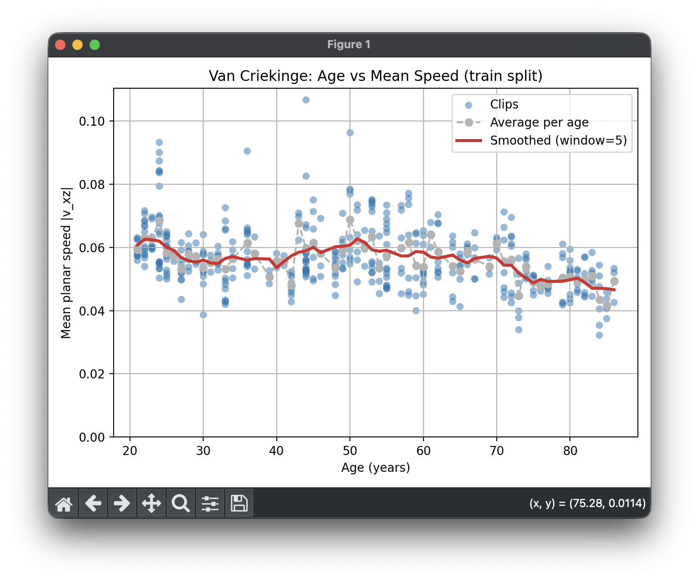
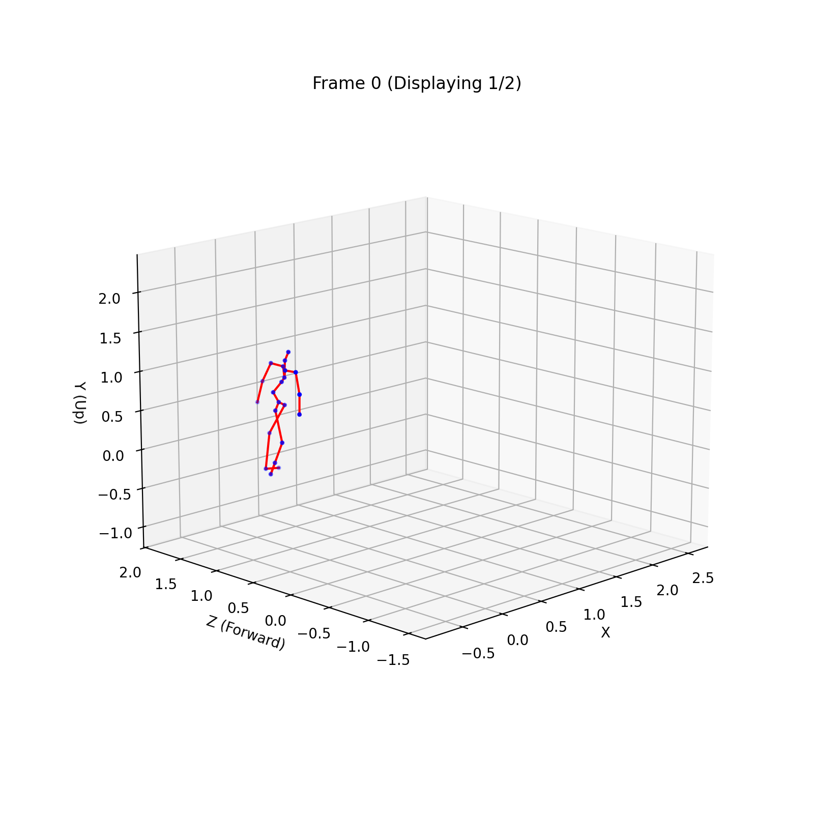

Sep 2025 - Dec 2025
NRC Research Assistant
Foundational research and engineering work for age-conditioned human motion generation, plus VR environment testing for headset-based simulation workflows.
Project Context
This work was part of an NRC research direction on modeling aging signatures in human motion for elder-care robotics. After my term, the project was rewritten and extended into a finished paper and public project page using an ST-GCN age classifier, LoRA-adapted MDM, and discrete age-group control. My contribution was earlier groundwork: data understanding, conversion-pipeline debugging, gait-signal analysis, and prototype age-conditioning experiments.
The finished public project page is useful context: Aging Motion Project.
Term Focus
I explored how generated walking motion could be controlled by age. One early direction used continuous scalar age conditioning instead of only text labels or coarse style descriptions. The work was useful for identifying where age information needed to enter the data pipeline, model architecture, training loop, and inference path.
VR Environment Exploration
I also explored VR scene workflows for viewing indoor and outdoor environments in a Meta Quest headset. This included testing Blender and Unity-style asset paths, Matterport-style 3D scans, Sketchfab VR uploads, headset navigation, scale limitations, and the practical constraints of tethering, browser-based viewers, and shared multi-user experiences.
- Tested whether Sketchfab VR could display uploaded 3D environments reliably on Quest hardware.
- Evaluated model-scale and movement constraints, including teleportation versus walking in a physical play area.
- Documented deployment constraints around upload limits, download controls, workstation software, and headset connectivity.
- Collected options for future shared VR simulations where multiple users could occupy the same virtual environment.
Model and Data Pipeline
- Modified HumanML3D and 100STYLE-style data loaders so batches could carry age values through dataset classes, collation, training, and inference.
- Designed an
AgeEncoderMLP that projects a scalar age value into the model latent dimension and injects it as a transformer conditioning token. - Adapted LoRA-MDM training and sampling paths for
cond_mode='text,age', including prior-preservation handling, checkpoint saving, and command-line age controls. - Debugged shape, device, dtype, and batching issues across training, validation, and generation scripts.
Van Criekinge Gait Work
I also worked on preparing the Van Criekinge gait dataset for motion-generation experiments. That included inspecting C3D and MATLAB motion-capture files, cleaning marker metadata, testing SMPL and Plug-in Gait joint mappings, and converting motion into HumanML3D-compatible representations.
A major debugging thread was preserving global pelvis trajectory information. Root-centered canonicalization made some converted motions look stationary or like they were sliding in place, so the pipeline needed trajectory-aware root velocity handling.
Validation
- Analyzed 447 valid Van Criekinge clips and found age-related walking-speed decline, with a steeper trend after age 60.
- Used speed-derived pseudo-age labels to test whether the model responded directionally to age conditioning.
- Ran age-sweep generation tests where generated root velocity decreased as age increased, with the strongest checkpoint showing about
-0.96age-speed correlation.
Selected Visuals

